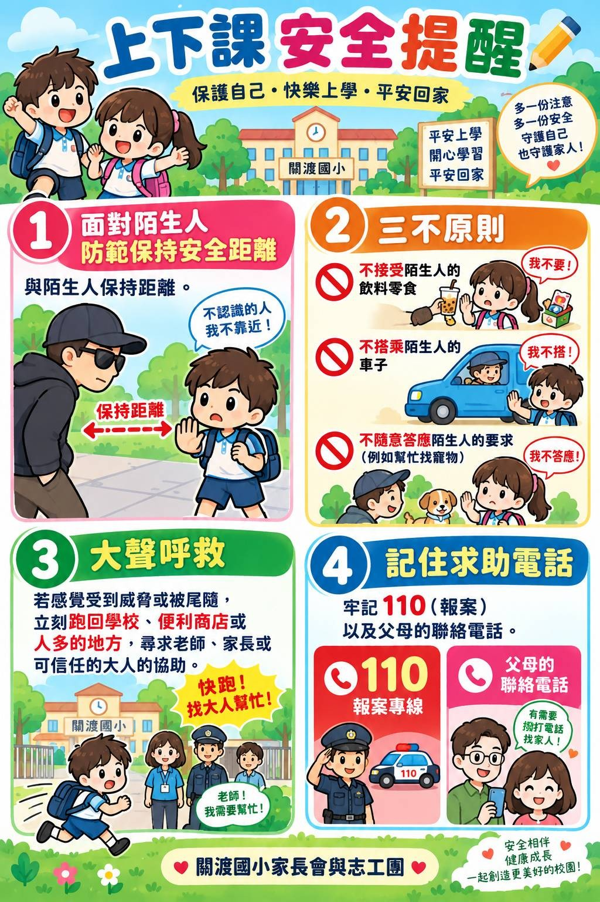

為維護學生上下學安全，請家長與同學配合下列事項。孩子的安全需要學校與家長共同守護，謝謝您的協助！
一、上下課安全提醒（家長會與志工團製作）
以下提醒海報由關渡國小家長會與志工團製作，歡迎家長與孩子一同閱讀：

- ① 面對陌生人：與陌生人保持安全距離，不認識的人我不靠近。
- ② 三不原則：不接受陌生人的飲料零食、不搭乘陌生人的車子、不隨意答應陌生人的要求（例如幫忙找寵物）。
- ③ 大聲呼救：若感覺受到威脅或被尾隨，立刻跑回學校、便利商店或人多的地方，尋求老師、家長或可信任的大人協助。
- ④ 記住求助電話：牢記 110（報案專線）以及父母的聯絡電話。
二、上放學時間
| 項目 | 時間 |
|---|---|
| 放學（中午） | 12:40 |
| 放學（下午） | 15:50 |
三、大門口接送區規定
- 汽車接送：請於大門口「家長臨停區」即停即走，勿併排停車、勿占用公車站牌。
- 機車接送：請靠邊暫停，學生請由路側（靠人行道）一側下車。
- 校門口黃色網狀線及紅線區禁止臨停，違規將通報交通單位取締。
- 放學接送請與孩子約定固定地點（如大門口穿堂、導護崗哨），以免人潮擁擠。
四、步行與路隊安全
- 安親班接送、步行路隊請依導護老師及交通服務隊引導通過路口。
- 過馬路請走斑馬線，遵守號誌；勿闖紅燈、勿跨越分隔島。
- 走路勿滑手機、勿戴耳機；雨天撐傘請注意視線死角。
- 清晨、傍晚光線較暗，建議衣物加貼反光貼條。
- 下午放學請配合路隊集合與行進規定，聽從導護師長指揮。
五、騎乘安全提醒
- 國小階段學生不建議騎乘自行車上學；如家長陪同騎乘，請全程配戴安全帽。
- 依道路交通管理處罰條例，騎乘微型電動二輪車須年滿14歲，國小學童不得騎乘，違規將開罰並通知家長。
- 如需騎自行車，須在門口下車牽行，停放於指定停車區並上鎖。
🌧️ 颱風豪雨停班停課訊息以臺北市政府教育局公告及本校網站最新消息為準；接送請提早出門並注意路況。
連絡窗口
學務處生教組：（02）2891-2847 轉分機 824
警衛室：（02）2891-2847 轉分機 199（範例，請改為實際分機）
※ 上班時間：週一至週五 08:00–16:00